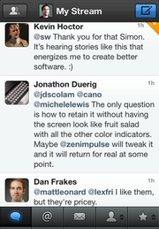
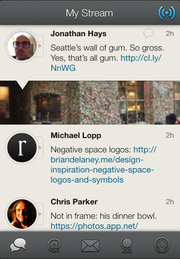

Lots of new people are joining App.net. If you’re one of them, welcome! In this post I’m going to briefly review 3 of the most popular iPhone clients: Netbot, Felix, and Riposte. You can’t really go wrong with any of these three apps. And if you’re looking for a Mac client, my current favorite is Kiwi.

Netbot is nearly identical to Tweetbot. It shares most of the same source and all of the same UI design. That common heritage is great because it’s familiar to fans of Tweetbot, and it allowed Tapbots to launch onto App.net in a big way, leapfrogging all other clients that were under development at that time.
But the familiar design is a double-edged sword. Not just because the App.net API will evolve and diverge from the Twitter API, but because if you switch between both Tweetbot and Netbot often, you may need to be careful that you remember which app you’re posting from. This was a problem for me since I no longer post to Twitter, and the last thing I wanted to do was accidentally leave a new post there after a 5-month absence.
All the usual features you’d expect are present in Netbot: timeline, mentions, private messages, multiple accounts, and sync with Stream Marker. It even has an iPad version, which you may want to pick up even if you chose a different primary app on the iPhone.
Netbot also has one big feature that most App.net clients don’t have: post search. This is not part of the core App.net API. Tapbots rolled their own search server so that they could offer this feature inside the app.
Sidenote plug: if you want search for all the posts from anyone you’re following, and your own posts, consider my web app Watermark. You can subscribe on the web or in the iPhone version.

Felix is possibly the most mature and actively maintained of the App.net-exclusive apps. You can tell from his App.net posts that the developer is passionate about App.net and determined to keep making his app better.
The current version supports all the basic features as well as push notifications, narrow inline image previews that take the full width of the screen, iCloud sync for drafts, starred conversations, and a brand new feature in version 1.5: collapsing posts you don’t want to see, similar to Twitterrific 5’s muffling. The only omission is that it does not yet support multiple accounts.
Felix is also unique in that it is the only one of these 3 apps that is not free. The other apps are counting on the Developer Incentive Program to send them a check each month instead of relying on traditional sales. Felix is a good value at $5, though, and the price shouldn’t stop you from trying it out, especially as it is a very small amount compared to the paid App.net subscription itself.
There are a number of gestures in Felix. One interesting shortcut — which may also be familiar to users of Twitterrific 5 — is swipe right to quickly start a reply. I personally found that this breaks the illusion of gestures as direct manipulation, though. Since swiping to the left pulls forward the conversation, doing the reverse swipe should go back to the timeline. (Update: There’s actually a setting in Felix to switch this behavior.)
Felix also added a clever trick in its post composition window. You can swipe the text view to move the selection cursor one character over, or use two fingers to swipe across an entire word at a time. This saves a lot of time tapping-and-holding and fiddling with the magnifying glass. Felix is packed with little details and shortcuts like this.

Riposte is beautifully done, with a clear design and a simple left/right gesture system to navigate through anything in the app. By default, there is no toolbar or tabs; everything is full-screen. Following Netbot’s lead, the developers of Riposte have decided to make their app free, and they have written up some thoughts on why.
Multiple accounts are handled well and it’s easy to switch between them. Like Felix and Netbot, push notifications are supported. Riposte uses large square inline images. It’s got a great interactions view that shows users who have recently followed you or starred your posts.
Riposte mirrors Felix’s compose text view gestures, and Riposte was the first to introduce 2-finger swipes in that text view. I love that both apps now support these gestures about equally, and hope to see many more apps steal this feature soon.
Since it doesn’t have tabs, switching between timeline, mentions, global stream, and other views is done through a slide-out panel, popularized in early apps like Facebook, Path, and Sparrow, and now very common everywhere, including my own Twitter app Tweet Library. It’s a swipe and a tap instead of the single tap of Netbot or Felix, but it is space-efficient and fits the flow of gestures in Riposte.
While Riposte holds its own against the competition, I think it will be chosen most not for its features but for its design. The striking full-screen look and consistent, discoverable gestures make this app feel great. It also has probably the most readable conversation view of any app I’ve used, where the focused post appears immediately and then is surrounded with the full conversation using smaller text. That design is even maintained in HTML email when sending a conversation from the app.